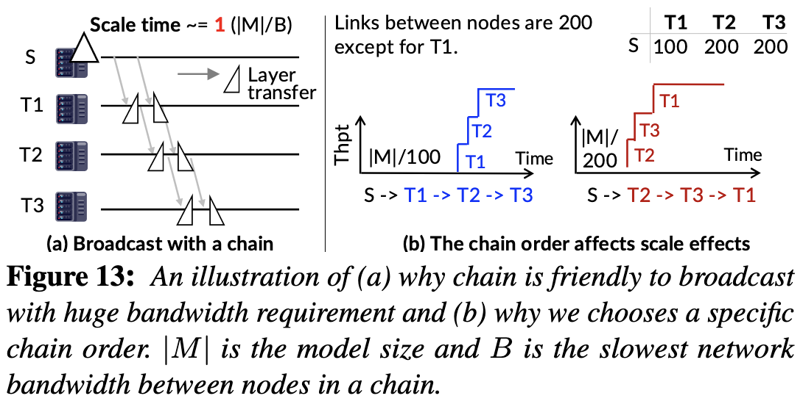

BlitzScale: Fast and Live Large Model Autoscaling with O(1) Host Caching¶
论文 SJTU IPADS
背景介绍¶
关于云服务的一些指标
- Tail latency（尾部延迟）指系统在高并发场景下，最慢的极少数请求（如 P99/P999 分位）的延迟表现。它反映的是用户体验的下限，而非平均性能。
- Service Level Objective（SLO，服务级别目标）是服务可靠性工程中的一个核心概念，它指的是：对某项服务在一段时间内所应达到性能或可用性的明确目标值。
- P99 是 “第 99 百分位数”（99th percentile） 的简称。
- MaaS 服务目标：最大化 goodput (符合 SLO 的请求数)；最小化预留的实例。
MaaS¶
模型即服务 (Model-as-a-Service, MaaS)，是 Serverless 的一种，用户不必考虑服务器硬件资源等部署细节，而是以按量计费 (pay-as-you-go) 的方式获取模型服务，降低用户的推理成本，提高云上的资源利用率。
MaaS 和其他 Serverless 场景一样，难以同时实现高服务性能和高效费比。自动缩扩容 (Autoscaling) 可以动态伸缩模型服务实例，解决 over-provision 和 under-provision 的问题。
自动扩容的时间是减少 SLO violation 的关键，即 cold-start latency 是我们的核心优化目标。如果服务拉起速度太慢，当请求激增时，由于系统的 throughput 并没有上升，而请求的 queue time 上升，排队的请求在实例扩容完成前都不能被推理，从而违反了 SLO.
扩容步骤：创建 CUDA Context (control plane)；加载模型参数 (data plane)
{kind=link}
SOTA 系统: ServerlessLLM¶
ServerlessLLM 将模型参数缓存在主机内存中，并优化模型缓存缺失时本地 SSD 加载参数的速度来提高模型的加载速度。
- 由于多个模型在同一个集群中服务，为了尽可能地让每一个模型能 cache hit，就必须把每个模型缓存在每台 GPU 服务器上，带来资源浪费。
- Cache miss 并不能因此避免，总有模型需要从 SSD 中进行加载。
- 使用本地的 SSD 加载模型不仅速度慢，而且与云上分离式存储架构（如 NVMeof）相违背。
vLLM, DistServe 并不针对云上场景设计，没有 autoscale 的功能，只能通过 over-provision 的方式来满足 SLO. 这会带来 GPU Time 的浪费。
模型服务的特点¶
{kind=link}
需求未知，可能短时激增；内存使用也未知，可长可短。
Two-Phase，Prefill 阶段用 TTFT 衡量，Decode 阶段用 TBT 衡量。LLM Query 是 stateful 的，KVCache 在模型推理过程中会被存储在 GPU Memory 中。
KVCache 的大小很可能无法在一个 instance 内装下，需要解决可能带来的 OOM 问题。
问题与挑战¶
-
Data Plane 的速度太慢: 把模型参数加载入 GPU 的速度太慢。MaaS 的特点即模型参数量大，生成一个 token 就需要模型拥有全量的参数。
例如，如果使用 SSD 从硬盘进行加载，每块 GPU 可以获得 2-10Gbps 的带宽，加载 Llamma3-8B 需要 8s.
-
模型加载 stop-the-world: 在参数加载完成之前，新的实例始终无法提供服务。
问题分析¶
{kind=link}
SLO 定义的是从用户发送请求到服务器返回推理响应的端到端延迟。可以看到，在 scale 过程中，后续请求的排队时间越来越长，导致 SLO 违例飙升。
Scale Time = SLO Time - TTFT Time, Bandwidth = Model Parameter Size / Scale Time
如果以 TP=4 传输一个 72B 的模型，根据 1250ms 的 SLO time 和 771ms 的 TTFT，要求网络带宽来到 576Gbps，SSD 显然做不到这一点。
{kind=link}
即使使用了 host cache，host 也不可能装下所有模型，因此不能完全避免缓存未命中带来的延迟。当 cache miss 时，模型加载速度就非常糟糕。同时，一个有意思的观察是，在 scale 的同时，由于负载被调度到了不同的 host，有更高概率带来 cache miss，从而导致 miss rate 飙升.
{kind=link}
Under-utilized 网络和高速的网络带宽给模型的加载带来更多可能性。即使在峰值下，网络的占用率也只有 60% 左右。集群中的高性能网络为我们提供了机会，RDMA 能提供 200Gbps 的带宽，与 PCIe 带宽接近。
问题 1¶
问题 1 要解决的是模型服务实例的拉起速度。
可能的解决方案：
- 现代 GPU 集群中有 NVLink, RDMA 等高速网络，而且在推理过程中没有很高的利用率，因此可以利用网络的 Multicast 快速拉起多个模型实例，满足自动缩扩容的需要，同时不会造成 over-provision 和 cache-miss 的问题。
-
利用高速网络的多播机制实现\(O(1)\)甚至\(O(0)\)缓存下的数据面加速。所有机器的内存加起来足够部署所有模型，因此\(O(1)\)的 cache 就能避免所有的 cache miss.
- 但是 multicast plan 的生成并不简单，需要一个 planner 能够 online 地解决 NP-hard 问题并避免 scaling 和 serving 的实例之间的网络干扰。
-
实现 online interference-free scale plan generation，基于网络在线生成快速扩容方案
- 用 online 的时间解决 NP-hard 问题。
- 消除 loading 和 serving 的 workload 的网络干扰。
问题 2¶
问题 2 要解决的是 scale 过程中 throughput 仍然无法增加的问题。
-
通过细粒度的 scaling 抽象和合作执行，实现数据面的在线加载（layer-by-layer 的推理策略）。
如果要加载 Qwen2.5-72B 并实现 500ms 的 stop time，则需要 576 Gbps 的带宽，目前的硬件无法实现。
-
使用 best-effort 的 scaling 无法实现负载均衡，因此我们需要考虑 future incoming layers，实现 zig-zag 的流水线调度。
可能的解决方案：用 zig-zag 的方法实现真正的 live autoscale，基于 zig-zag 调度实现高效快速扩容。从 throughput 的角度理解为什么这个方法有可能 work：假设一个 7-layer 模型，原来的 throughput 是 \(1/7\)，在加载了一个 layer 之后，throughput 来到了 \(1/6\)。
{kind=link}
系统设计¶
系统架构¶
24k 行 Rust 和 C++ 代码，实现 PD 分离和 continuous batching 等技术。
{kind=link}
- Global Parameter Manager 管理在 GPU 上部署的模型和在 CPU 上 cache 的模型，实现 model 和 source 的映射。
- Load Monitor 负责监控负载。
- Scale Planner 负责生成 online 的方案。
- Execution Scheduler 负责请求调度和重定向。
网络拓扑¶
{kind=link}
问题建模：
- NVLink 有 1600-3600Gbps 的带宽，因此用 NVLink 互联的组内的通信时间可以忽略。
- 忽略二级以上交换机，采用 leaf-spine 结构。每个 GPU 与一台叶子交换机相连，拥有 \(BW_i\) 的带宽；叶子交换机内的通信是 full-mesh 的。
- 叶子交换机之间（即跨交换机）的通信小于等于交换机内部的，采用 VLT 等网络技术屏蔽更复杂的拓扑结构。
线性转发链 Serial Forwarding Chain¶
- Data Center 中存在 scale-up (如 NVLink) 和 scale-out (如 RDMA)，拓扑结构复杂，在异构网络中获取最优的多播 (multicast) 方案是一个 NP-hard 问题。在服务的过程中，用户的流量和 GPU 的分配也是动态变化的，因此需要生成在线扩容方案。
在 PD 分离的场景下，朴素的扩容方式会因流量竞争而产生网络干扰，而利用网络硬件双向的特性可以规避这个干扰。如果产生流量竞争，在实验上它会带来 1.5 倍的扩容时间和 50% 的 TBT Tail Latency.
{kind=link}
{kind=link}
串行转发的多播机制
串行转发的多播机制（serial forwarding multicast）能加载大量数据（如模型参数），而且无论接收者数量是多少，效率几乎不变。数据从源节点出发，一跳跳往下传播（像链条），或利用树状结构传播，形成类似“级联转发”。
多播是一种网络传输方式，介于广播（broadcast）和单播（unicast）之间：
- 单播：一个源发送一份数据给一个接收者（N 个接收者要发 N 次）
- 广播：一个源发数据给网络中所有节点（不管你要不要）
- 多播：一个源发数据给特定一组接收者 多播通过 组播地址（multicast address） 和 组播组（multicast group） 来实现有选择性的广播。
- 串行的广播链路 \(S\rightarrow T_1\rightarrow T_2 \rightarrow ... \rightarrow T_n\) 有很好的性质，在 bandwidth-intensive 的场景下，整体的传输时间和 scale 的模型个数无关。
- serial-chain 是必要的，但是 multi-chain 更好（因为 inter-leaf 的通信可能差异很大），它有一定可能避免 inter-leaf 的通信，同时让 PD 分离场景下的干扰更少。
{kind=link}
算法设计的 insights：
- prune 掉 serving 的实例，减少干扰（load 可以来自 host memory 和 GPU instances）；
- 把 NVLink 互联的卡作为一个逻辑组，从方案中省略 NVLink，从而降低了复杂度；
- 尽量选择同一个 leaf 交换机下的节点进行传输，可以更大程度地保障带宽；
- 链中的节点顺序非常重要（从网络中加载模型参数是 band-intensive 的）。用贪心的方式从高带宽到低带宽，算法按照节点间链路速度的降序进行排序，向具有更高带宽的节点发送数据可以更快地提升（系统的）服务吞吐量； 
- 双向的 RDMA 下，incast 和 outcast 流量互不干扰，在同一条链路上避免同向的数据流动。（例如从 decode instance 传送参数到 prefill instance）
{kind=link}
{kind=link}
模型分片聚合 Sharded Parameter Transfer¶
- 利用 scale-up 网络和 scale-out 网络的带宽差异，在分发参数的过程中，可以采用分片分发的方式，即从不同的 src 节点分别分发模型的一部分，聚合网络带宽；再利用卡间 scale-up 网络的 NVLink 带宽完成 All-gather 操作，从而加快模型参数传递速度。
{kind=link}
Zigzag 调度¶
- 在扩容过程中，新分配的 GPU 可以为系统提供算力，从而解决新分配的 GPU 在模型参数尚未加载完成的时候无法生成 token 的问题。
- 已经加载到服务器上的模型拥有全量参数，可以在请求激增的时候将新的请求路由到新分配的 GPU 上推理若干层，再路由回老的 GPU 上推理剩余层。
调度的时机：
- 当 scale 会破坏 SLO：profile 加载速度和 SLO 之间的关系
- 找到一个 overloaded instance，通常和第一条呼应，这个时候我们通常挑选在广播链 tail 位置的 instance，因为它的带宽最低.
方案 1:
求解一个 ILP 线性约束。
方案 2:
{kind=link}
尽可能地让新的 request 在新的 instance 上运行更多的时间。
优先级如何定义？遵循 FCFS 的原则；同时有加载的 layer 还没有被执行。
全局参数池和 scale 策略¶
初始化时完成对模型参数的均匀 1 拷贝。
通过 tokens per second 和 KVCache 使用率来观测集群负载。
关于 LLM¶
在 PD 分离的场景下，一个 layer 的 prefill 和 decode 时间基本和 batched token size 成正比，因此在计算 ILP 的时候需要为每个 batch 加一个正则化参数。而在 decoding 阶段，AR 下无法预测 token size 大小，因此只能使用 ILP-free scheduling。（这里，在 decoding 阶段 scaling 的同时也需要考虑 KVCache 的问题）
在 scale decode 实例的时候，由于 KVCache Transfer 和 parameter loading 都来自 incast 带宽，不可避免带来干扰。因此目前的策略是先把一部分 prefill 实例转换为 decode 实例，再 scale prefill 实例。
当我们发现 scale prefill 实例是必要的时候，可以同步 scale decode 实例，这样就可以 overlap 掉这一部分开销。（分析 prefill 和 decode 进行 scale 的时间差）
Evaluation¶
TestBed¶
{kind=link}
Baseline¶
- ServerlessLLM (S-LLM and Optimal AllCache)
- Distserve
- vLLM
{kind=link}
TTFT 和 TBT¶
BlitzScale 在 TTFT 上的优化显著优于 TBT。
- Decoding 可以被 pre-scaled，即当 prefill 的 throughput 增加，decode instance 就会直接 auto-scale，这部分时间和 prefill 时间重叠。
- Decode 可以被 scale 的更少，因为这个阶段是 memory-bound 的，在目前的优化下可以实现 no queueing time, slightly increased TBT.
- 在不同的工作负载下，对于 S-LLM，第一次 burst 时会带来大量 cache miss，但是后续的 burst 就可以实现 cache hit（corner case 需要考虑两次 burst 的间隔大于 eviction time）
性能与资源使用¶
{kind=link}
在相同的 GPU Time 下获得更好的性能。Over-provision 能带来最好的表现但是会浪费 GPU 时间。

ServerlessLLM 的 memory 占用和 host 数成正比，因此一个模型会迅速地污染服务器的 memory.
{kind=link}
这一段话很好地解释了 scale 的常用配置。
BLITZSCALE utilizes two broadcast chains (each involving 3 instances), while the end instances involve a live autoscale. The start instances are the decode instances. For AllCache, it directly loads the parameters from the host memory of the scaled instances. Second, BLITZSCALE can scale faster even compared with AllCache, thanks to our NVLink-based fused link transmission protocol: it can finish scaling in 1,200 ms while AllCache takes about 2,000 ms.
{kind=link}
消融实验：网络越差，live scale 的效果越好。decode 通常不需要 scale.
{kind=link}
网络带宽的 overhead 几乎可以忽略。
{kind=link}
在足够的优化下，control plane 的 overhead 可以极大地降低。
Related Work¶
-
Orca: continuous batching
- Iterative-level scheduling: 不同于以前以 batch 作为完整单位进行推理，当 batch 内有一个 request 已经完成推理，它必须通过 zero-padding 的方式等待其他所有请求完成；现在在一次迭代中调度一次，解决了这个问题。
- Selective batching: 针对 Attention 等无法 batch 的操作，我们以 request 为单位进行处理；但对其他位置无关的操作，我们可以用 flatten 和 reshape 操作实现 batchify.
-
DistServe
- 将 prefill 和 decode 解耦，将相同 layer 所属的 GPU 放在同一台机器内，减少 KVCache 迁移的 overhead
-
LoongServe
- 面对 long context 的场景，单张 GPU 无法存下 KVCache，SP 成为必要的分布式手段。同时，不同 request 和不同 phase 之间的差距可能会很大，例如不同的上下文导致 prefill 阶段的负载波动很大。因此，实现 elastic 的并行也是十分重要的。
- 提出 ESP 方法，把 SP 扩展到推理阶段。使用 proactive migration 降低了从 prefill 到 decode 阶段 KVCache 迁移的开销。使用 multiple master instance 的方法实现 decode 阶段的负载均衡。设计了 online 的缩扩容算法。
-
ServerlessLLM
- 设计了 multi-tier caching system，把模型参数加载到 CPU DRAM 中进行数据面加速。如果 cache hit，可以利用 CPU-GPU PCIe 带宽加载模型。
- 但不总是能直接加载。如果 cache-hit 但是 GPU 已经被占用，则需要把现有负载迁移到其他机器上；如果 cache miss 了，则需要从 SSD 当中加载模型。
-
DeepServe
- 微服务架构（还可以拉上 mooncake 谈一谈）
-
并行策略
- DeepSeek 实现 DP + EP 的并行策略。（All2All 让进出通信量保持不变）但是这也对 reliability 的要求非常高。另外实例内的 scale（和这篇文章 concern 的问题也非常相关）也非常的难，对于一个同步通信，卡数越多就会带来通信效率和稳定性的挑战。波动流量下的负载均衡带来更大的挑战。